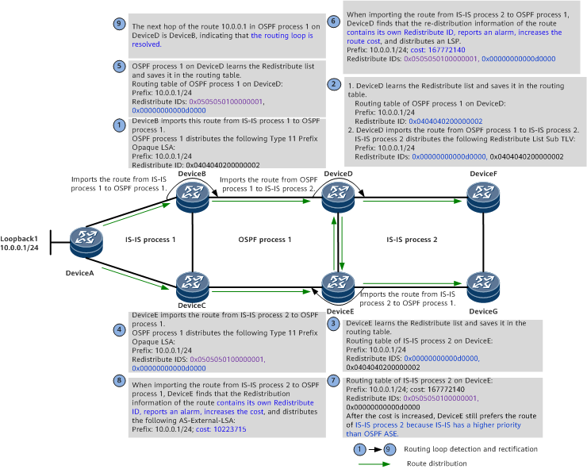

Understanding Routing Loop Detection for Routes Imported to IS-IS
Routes of an IS-IS process can be imported to another IS-IS process or the process of another protocol (such as OSPF or BGP) for redistribution. However, if a device that performs such a route import is incorrectly configured, routing loops may occur. IS-IS can use the routing loop detection function to detect routing loops.

When IS-IS is configured to import routes, routing loop detection can be deployed to proactively detect whether routing loops exist in the topology and whether the routing loop prevention mechanism of the import route-policy takes effect. Routing loop alarms can be reported to locate configuration errors in time.
Generally, routing loop detection is not used to resolve routing loops. Increasing the metric value or adjusting the route preference value after a routing loop alarm is reported can temporarily prevent loops but may cause the traffic to be forwarded in an unexpected path. Therefore, loop detection can only be used temporarily. To eliminate routing loops in the long run, re-plan the network configuration.
Related Concepts
Redistribute ID
IS-IS uses a system ID as a redistribution identifier, OSPF and OSPFv3 use a router ID + process ID as a redistribution identifier, and BGP uses a VrfID + random number as a redistribution identifier. For ease of understanding, the redistribution identifiers of different protocols are all called Redistribute IDs. When routes are distributed, the extended TLVs carried in the routes contain Redistribute IDs.
Redistribute list
A Redistribute list may consist of multiple Redistribute IDs. Each Redistribute list of BGP contains a maximum of four Redistribute IDs, and each Redistribute list of any other routing protocol contains a maximum of two Redistribute IDs. When the number of Redistribute IDs exceeds the corresponding limit, the old ones are discarded according to the sequence in which Redistribute IDs are added.
IS-IS Redistribute List Format
IS-IS Redistribute IDs are distributed through the TLV (with the type value of 135 or 235). Figure 1 shows the format of the Redistribute List Sub TLV.
Field |
Length |
Description |
|---|---|---|
Type |
8 bits |
TLV type. The value is 10. |
Length |
8 bits |
Total length of the TLV (excluding the Type and Length fields). |
Flags |
8 bits |
Flags. The format is shown in Figure 2.
|
Redistribute ID |
64 bits |
Device that imported the route last time and the Redistribute ID of a protocol on the device. |
Cause (IS-IS Inter-Process Mutual Route Import)
On the network shown in Figure 3, DeviceA, DeviceB, and DeviceC run IS-IS process 1, DeviceF and DeviceG run IS-IS process 2, and DeviceD and DeviceE run both processes. DeviceD is configured to import routes from IS-IS process 1 to IS-IS process 2. DeviceE is configured to import routes from IS-IS process 2 back to IS-IS process 1. As the costs of the newly distributed routes are smaller, they are preferentially selected, resulting in routing loops.
Take DeviceA distributing route 10.0.0.1/32 as an example. A stable routing loop is formed through the following process:
Phase 1
On the network shown in Figure 4, IS-IS process 1 on DeviceA imports the static route 10.0.0.1, generates an LSP carrying the prefix of this route and floods the LSP in IS-IS process 1. After receiving the LSP, IS-IS process 1 on DeviceD and IS-IS process 1 on DeviceE each calculate a route to 10.0.0.1, with the outbound interface being interface1 on DeviceD and interface1 on DeviceE, respectively, and the cost being 110. At this point, the routes to 10.0.0.1 in IS-IS process 1 in the routing tables of DeviceD and DeviceE are active.
Phase 2
In Figure 5, DeviceD is configured to import routes from IS-IS process 1 to IS-IS process 2, and DeviceE is configured to import routes from IS-IS process 2 to IS-IS process 1. Either no route-policy is configured for the import, or the configured route-policy is improper. DeviceD is used as an example. In phase 1, the route to 10.0.0.1 in IS-IS process 1 in the routing table of DeviceD is active. In this case, IS-IS process 2 imports this route from IS-IS process 1, generates an LSP carrying the prefix of this route, and floods the LSP in IS-IS process 2. After receiving the LSP, IS-IS process 2 on DeviceE calculates a route to 10.0.0.1, with the cost being 10, which is smaller than that (110) of the route calculated by IS-IS process 1. As a result, the active route to 10.0.0.1 in the routing table of DeviceE is switched from the one calculated by IS-IS process 1 to the one calculated by IS-IS process 2, and the outbound interface is sub-interface 2.1.
Phase 3
In Figure 6, after the route to 10.0.0.1 in IS-IS process 2 on DeviceE becomes active, IS-IS process 1 imports this route from IS-IS process 2, generates an LSP carrying the prefix of this route, and floods the LSP in IS-IS process 1. After receiving the LSP, IS-IS process 1 on DeviceD recalculates the route to 10.0.0.1, with the cost being 10, which is smaller than that (110) of the previously calculated route. As a result, the route to 10.0.0.1 in IS-IS process 1 in the routing table of DeviceD is switched to the route (with a smaller cost) advertised by DeviceE, and the outbound interface is interface 2.
Phase 4
After the active route to 10.0.0.1 on DeviceD is updated, IS-IS process 2 still imports the route from IS-IS process 1 as the route remains active, and continues to distribute/update an LSP.
By now, a stable routing loop is formed. Assuming that traffic is injected from DeviceF, Figure 7 shows the traffic flow when the routing loop occurs.
Implementation (IS-IS Inter-Process Mutual Route Import)
Routing loop detection for IS-IS inter-process mutual route import can resolve the routing loop in the preceding scenario.
When distributing a TLV (with the type value of 135 or 235) for an imported route, IS-IS also uses a sub-TLV (with the type value of 10) of the TLV (with the type value of 135 or 235) to distribute to other devices the Redistribute ID of the device that re-distributes the imported route. If the route is re-distributed by multiple devices, a maximum of two Redistribute IDs of these devices are distributed through the sub-TLV (with the type value of 10) of the TLV (with the type value of 135 or 235). After receiving the sub-TLV, a route calculation device saves the Redistribute IDs of the re-distribution devices along with the route. When the route is imported by another process, the device checks whether the re-distribution information of the route contains the Redistribute ID of the local process. If the information contains the Redistribute ID of the local process, the device determines that a routing loop occurs and distributes a large route cost (167772140) in the TLV (with the type value of 135 or 235) for the imported route by default. This ensures that other devices preferentially select other paths after learning the route, preventing routing loops.
Even after the route cost 167772140 is distributed through an LSP, the device does not proactively withdraw the routing loop state. Instead, the device keeps distributing the route cost 167772140. To manually exit the routing loop state, a clear command needs to be run.
The networking shown in Figure 8 is used as an example. Assume that the system ID of IS-IS process 2 on DeviceD is 0000.0000.000d (Redistribute ID: 0x00000000000d0000). The system ID of IS-IS process 1 on DeviceE is 0000.0000.000e (Redistribute ID: 0x00000000000e0000).
Routing loop detection and rectification are described as follows:
- Through IS-IS process 1, DeviceD learns the route (10.0.0.1/24) distributed by DeviceB and imports the route from IS-IS process 1 to IS-IS process 2. When distributing the imported route, IS-IS process 2 on DeviceD distributes the Redistribute ID of IS-IS process 2 through the sub-TLV (with the type value of 10) of the TLV (with the type value of 135 or 235).
- IS-IS process 2 on DeviceE learns the route distributed by DeviceD and saves the Redistribute ID distributed by IS-IS process 2 on DeviceD in the routing table during route calculation. At this time, the next hop of the route 10.0.0.1 in IS-IS process 2 on DeviceE is DeviceD.
- When re-distributing the route imported from IS-IS process 2, IS-IS process 1 on DeviceE also distributes the Redistribute ID of IS-IS process 1 on DeviceE through the sub-TLV (with the type value of 10) of the TLV (with the type value of 135 or 235).
- After learning the route from DeviceE, IS-IS process 1 on DeviceD saves the Redistribute ID information distributed by IS-IS process 1 on DeviceE in the routing table during route calculation. At this time, the next hop of the route 10.0.0.1 in IS-IS process 1 on DeviceD is DeviceE, indicating that a loop occurs.
- When importing the route from IS-IS process 1 to IS-IS process 2, DeviceD finds that the re-distribution information of the route contains its own Redistribute ID, considers that a routing loop is detected, and reports an alarm. IS-IS process 2 on DeviceD distributes a large cost 167772140 along with the imported route.
- After learning the route, IS-IS process 2 on DeviceE does not preferentially select it because of the large cost. Therefore, the route is not optimal in the IP routing table.
- DeviceE fails to import the route from IS-IS process 2 to IS-IS process 1. Therefore, IS-IS process 1 on DeviceE withdraws the route.
- Unable to learn the route 10.0.0.1 from DeviceE, IS-IS process 1 on DeviceD updates the route's next hop to DeviceB, indicating that the routing loop is resolved.
In the preceding typical networking:
- Routing loop detection is performed randomly. In the preceding process, it is assumed that DeviceD distributes a Redistribute ID and detects a routing loop first. In this case, DeviceD distributes the maximum route cost. If due to another time sequence, DeviceE distributes a Redistribute ID and detects a routing loop first, IS-IS process 1 on DeviceE distributes the maximum route cost.
- Distributing a large route cost does not necessarily resolve routing loops. For example, if routes are imported between two routing protocols, a route with a larger cost may be preferentially selected.
- If routes are imported within a protocol on a device and the device detects a routing loop, it increases the cost of the route to be distributed. After the remote device learns this route with a large cost, it does not preferentially select this route as the optimal route in the IP routing table. In this manner, the routing loop is resolved. In the case of inter-protocol route import, if a routing protocol with a higher priority detects a routing loop, although this protocol increases the cost of the corresponding route, the cost increase will not render the route inactive. As a result, the routing loop cannot be eliminated. If the routing protocol with a lower priority detects a routing loop and increases the cost of the corresponding route, the originally imported route is preferentially selected. In this case, the routing loop can be eliminated.
Cause (Mutual Route Import Between IS-IS and OSPF)
In Figure 9, DeviceA, DeviceB, and DeviceC run IS-IS process 1; DeviceD, DeviceE, DeviceF, and DeviceG run IS-IS process 2; in addition, DeviceB, DeviceC, DeviceD, and DeviceE run OSPF process 1. DeviceB imports routes from IS-IS process 1 to OSPF process 1, DeviceD imports routes from OSPF process 1 to IS-IS process 2, and DeviceE imports routes from IS-IS process 2 to OSPF process 1. Improper route import configurations may cause routing loops. For example, if DeviceD preferentially selects routes learned from DeviceE, a routing loop occurs between DeviceD and DeviceE. The following part describes how the routing loop is detected and resolved.
Implementation (Mutual Route Import Between IS-IS and OSPF)
The networking shown in Figure 10 is used as an example. Assume that the system ID of IS-IS process 2 on DeviceD is 0000.0000.000d (Redistribute ID: 0x00000000000d0000), the router ID of OSPF process 1 on DeviceB is 4.4.4.2 (Redistribute ID: 0x0404040200000001), and the router ID of OSPF process 1 on DeviceE is 5.5.5.1 (Redistribute ID: 0x0505050100000001).

Routing loop detection and rectification are described as follows:
- Through IS-IS process 1, DeviceB learns the route 10.0.0.1/24 distributed by DeviceA and imports this route from IS-IS process 1 to OSPF process 1. When DeviceB distributes this route through OSPF process 1, information carried in the route contains the Redistribute ID of OSPF process 1 on DeviceB.
- After learning the Redistribute list carried in the route distributed by DeviceB, OSPF process 1 on DeviceD saves the Redistribute ID of OSPF process 1 on DeviceB in the routing table during route calculation. After DeviceD imports this route from OSPF process 1 to IS-IS process 2, DeviceD redistributes the route through IS-IS process 2. In the redistributed route, the extended TLV contains the Redistribute ID of IS-IS process 2 on DeviceD and the Redistribute ID of OSPF process 1 on DeviceB.
- After learning the Redistribute list carried in the route distributed by DeviceD, IS-IS process 2 on DeviceE saves the Redistribute list in the routing table during route calculation. At this time, the next hop of the route 10.0.0.1 in IS-IS process 2 on DeviceE is DeviceD.
- After DeviceE imports this route from IS-IS process 2 to OSPF process 1, DeviceE redistributes the route through OSPF process 1. The redistributed route carries the Redistribute ID of OSPF process 1 on DeviceE and the Redistribute ID of IS-IS process 2 on DeviceD. The Redistribute ID of OSPF process 1 on DeviceB has been discarded from the route.
- DeviceD learns the Redistribute list carried in the route distributed by DeviceE and saves the Redistribute list in the routing table. At this time, the next hop of the route 10.0.0.1 in OSPF process 1 on DeviceD is DeviceE, indicating that a loop occurs.
- When importing the OSPF route to IS-IS process 2, DeviceD finds that the Redistribute list of the route contains its own Redistribute ID, considers that a routing loop is detected, and reports an alarm. To eliminate the routing loop, IS-IS process 2 on DeviceD attaches a large cost to the route when redistributing it.
- However, because IS-IS has a higher priority than OSPF ASE, DeviceE still prefers the route learned from DeviceD through IS-IS process 2. As a result, the routing loop is not resolved. The route received by DeviceE carries the Redistribute ID of OSPF process 1 on DeviceE and the Redistribute ID of IS-IS process 2 on DeviceD.
- When importing the route from IS-IS process 2 to OSPF process 1, DeviceE finds that the Redistribution information of the route contains its own Redistribute ID, considers that a routing loop is detected, and reports an alarm. To resolve the routing loop, OSPF process 1 on DeviceE distributes a large route cost when redistributing the route.
- At this time, the next hop of the route 10.0.0.1 in OSPF process 1 on DeviceD is DeviceB, indicating that the routing loop is resolved.
In the preceding typical networking:
If routes are imported within a protocol on a device and the device detects a routing loop, it increases the cost of the route to be distributed. After the remote device learns this route with a large cost, it does not preferentially select this route as the optimal route in the IP routing table. In this manner, the routing loop is resolved.
In the case of inter-protocol route import, if a routing protocol with a higher priority detects a routing loop, although this protocol increases the cost of the corresponding route, the cost increase will not render the route inactive. As a result, the routing loop cannot be eliminated. If the routing protocol with a lower priority detects a routing loop and increases the cost of the corresponding route, the originally imported route is preferentially selected. In this case, the routing loop can be eliminated.
By default, the priorities of BGP routes and OSPF ASE routes are lower than those of IS-IS routes. The routing loop detection and rectification in the scenario where routes are imported between IS-IS and BGP are the same as those in the scenario where routes are imported between IS-IS and OSPF ASE.